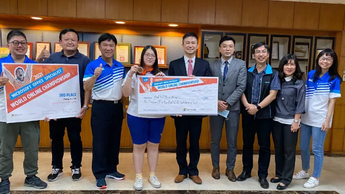
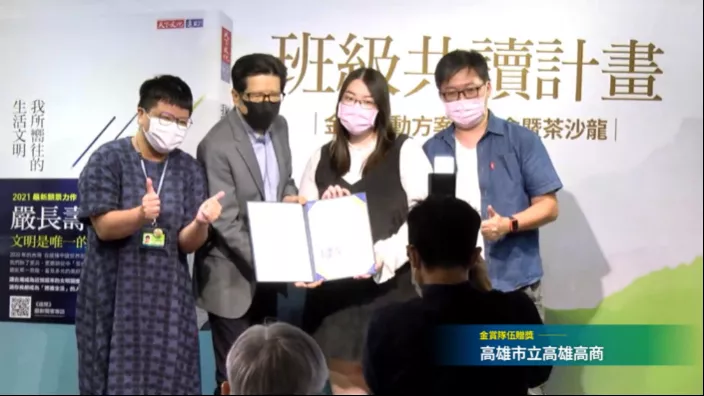

林芃佑
國立臺灣科技大學 / 企業管理系
嗨！我是林芃佑，目前就讀於國立臺灣科技大學企業管理系三年級。
在學期間，我同時修習教育學程，擅長科目為經濟學，有兩年半的家教經驗。
現任Ebs美樂顧問公司行銷業務實習助理。
特殊經歷
104高中職Podcast
由104邀請錄製高中職Podcast，分享於高職擔任選手的經驗，與須具備的特質。

微軟Word世界賽 銅牌
2021年微軟舉辦Microsoft Office Spectalist（MOS）中Word, Power Point及Excel的世界賽，在2021年九月先進行全國賽，全國第一名可代表參與世界賽。我在2021年十一月的世界賽中，取得銅牌。

嚴長壽總裁共讀計畫 專案分享
嚴長壽總裁於2021年發起班級共讀計畫《我所嚮往的生活文明》，讓高中職學生能在閱讀後提出自己達到理想的解決方案。我提出了優化高職教育的內容。
專業能力
Microsoft
MOS Word Expert 2019 專家級認證
勞動部
乙級電腦軟體應用技術士
丙級電腦軟體應用技術士
丙級會計事務技術士
語文能力
TOEIC L&R 770
TOEIC S&W 290
課堂作品

聯絡方式
Email: angelalinnnnn@gmail.com
Phone: 0983-456-722